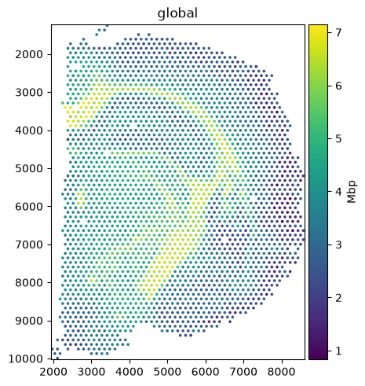
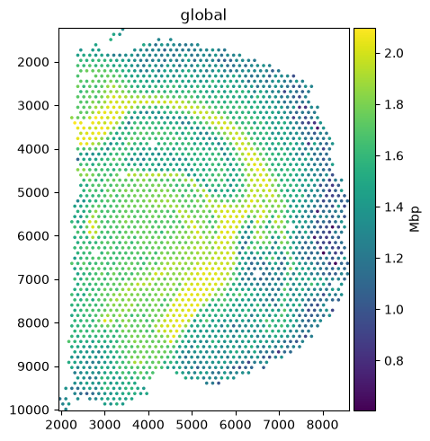
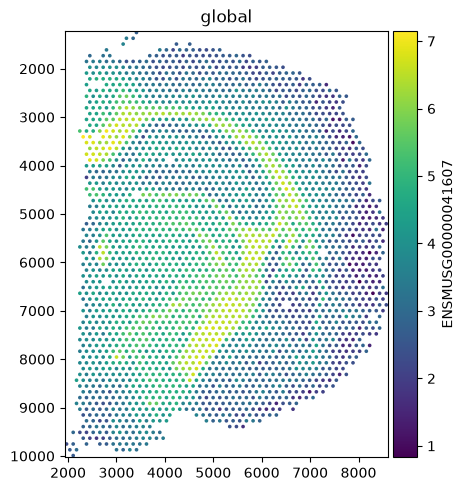
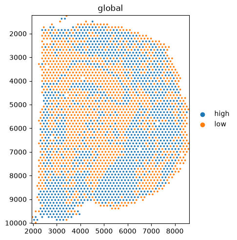

Colouring by expression: tables, layers, and gene symbols#
When you colour an element by a gene, spatialdata-plot reads the value from the table that
annotates it. Three arguments control exactly which values it uses: table_name (which table),
table_layer (which matrix within that table), and gene_symbols (how to look a gene up in var).
By the end you should be able to:
Colour spots by a gene’s expression.
Read from a specific matrix with
table_layer(e.g. raw counts vs a normalised layer).Look genes up by symbol when
varis indexed by IDs, withgene_symbols.Choose between several annotating tables with
table_name.
We use the real 10x Visium mouse-brain dataset from squidpy. It ships with a single raw table, so
we construct the extra layer, the gene-ID index, and the second table in-notebook to demonstrate
each argument — real datasets often already carry them.
Setup#
import numpy as np
import scipy.sparse as sp
import anndata as ad
import squidpy as sq
from spatialdata import SpatialData
from spatialdata.models import TableModel
import spatialdata_plot # noqa: F401 # registers the .pl accessor
sdata = sq.datasets.visium_hne_sdata()
table = sdata.tables["adata"]
gene = "Mbp" # myelin basic protein, a white-matter marker
sdata
INFO Loading existing dataset from data/spatialdata/visium_hne_sdata.zarr
SpatialData object, with associated Zarr store: /Users/tim.treis/Documents/GitHub/spatialdata-plot/docs/notebooks/examples/data/spatialdata/visium_hne_sdata.zarr
├── Images
│ └── 'hne': DataTree[cyx] (3, 11757, 11291), (3, 5878, 5645), (3, 2939, 2822), (3, 1469, 1411)
├── Shapes
│ └── 'spots': GeoDataFrame shape: (2688, 2) (2D shapes)
└── Tables
└── 'adata': AnnData (2688, 18078)
with coordinate systems:
▸ 'global', with elements:
hne (Images), spots (Shapes)
1. Colour by a gene#
Passing a var name to color= colours each spot by that gene’s expression, from the annotating
table’s main matrix (X).
sdata.pl.render_shapes("spots", color=gene).pl.show()

2. Choosing the matrix — table_layer#
A table can hold several matrices in .layers (raw counts, normalised, scaled). table_layer= picks
which one to colour from. Here we add a log-normalised layer and compare it with the raw X above —
the log scale compresses the bright outliers and reveals more structure.
(Setup — real data often already carries such a layer.) Note table_layer only affects
gene-expression colouring, i.e. a var_names lookup; colouring by an obs column ignores it.
# setup: add a normalised layer (your data may already have one)
raw = table.X.toarray() if sp.issparse(table.X) else table.X
table.layers["lognorm"] = np.log1p(raw)
sdata.pl.render_shapes("spots", color=gene, table_layer="lognorm").pl.show()

3. Looking up by symbol — gene_symbols#
Many datasets index var by a stable ID (Ensembl) and keep the human-readable symbol in a column.
color= then can’t find a symbol directly. gene_symbols= names the column to map through. We
simulate that layout on a copy of the table and render it through a throwaway SpatialData, so the
original table stays symbol-indexed and every earlier cell keeps working.
# setup — skip on your own data: simulate an ID-indexed table on a copy so the original is untouched
table_ids = table.copy()
table_ids.var["symbol"] = table_ids.var_names
table_ids.var.index = list(table_ids.var["gene_ids"].values) # var now indexed by Ensembl IDs
# render from a lightweight SpatialData that reuses the spots and the copied, ID-indexed table
# color= still takes the symbol; gene_symbols tells the renderer which var column to map through
demo = SpatialData(shapes={"spots": sdata.shapes["spots"]}, tables={"adata": table_ids})
demo.pl.render_shapes("spots", color=gene, gene_symbols="symbol").pl.show()

4. Choosing the table — table_name#
An element can be annotated by more than one table. When there is only one, it is used automatically;
with several you disambiguate with table_name=. We add a second table of per-spot QC flags and
colour by it.
A table links to its element through three keys in table.uns['spatialdata_attrs']: region (the
annotated element), region_key (the obs column naming that element for each row), and instance_key
(the obs column giving each row’s id within it). We assemble the two tables into a throwaway
SpatialData so the original object is left untouched.
attrs = table.uns["spatialdata_attrs"]
region_key = attrs["region_key"] # obs column naming which element each row annotates
instance_key = attrs["instance_key"] # obs column giving the row id within that element
region = attrs["region"] # the annotated element ("spots")
qc_obs = table.obs[[region_key, instance_key]].copy()
qc_obs["qc"] = np.where(table.obs["total_counts"] > table.obs["total_counts"].median(), "high", "low")
qc_table = TableModel.parse(
ad.AnnData(obs=qc_obs), region=region, region_key=region_key, instance_key=instance_key
)
# two tables annotate the same spots; table_name picks which one to colour from
demo = SpatialData(shapes={"spots": sdata.shapes["spots"]}, tables={"adata": table, "qc": qc_table})
demo.pl.render_shapes("spots", color="qc", table_name="qc").pl.show()
WARNING render_shapes: Converting copy of 'qc' column to categorical dtype for categorical plotting. Consider
converting before plotting.

Summary#
Colouring by a gene reads from the annotating table of the element.
table_layer=selects the matrix within that table (e.g. rawXvs alognormlayer), for gene-expression colouring only — anobs-column colour ignores it.gene_symbols=names thevarcolumn of symbols to lookcolor=up in, for ID-indexed tables.table_name=picks the table when an element has more than one; with a single table it is automatic.
Together these let you point render_* at exactly the values you want to visualise, without
reshaping your SpatialData object.
For reproducibility#
# ruff: noqa: F401, F811, I001, E402
# fmt: off
import warnings
import spatialdata_plot
%load_ext watermark
# fmt: on
%watermark -v -m -p spatialdata,spatialdata_plot,squidpy,anndata,numpy
Python implementation: CPython
Python version : 3.14.6
IPython version : 9.14.1
spatialdata : 0.7.3
spatialdata_plot: 0.4.1
squidpy : 1.8.2
anndata : 0.12.17
numpy : 2.4.6
Compiler : Clang 20.1.8
OS : Darwin
Release : 25.2.0
Machine : arm64
Processor : arm
CPU cores : 8
Architecture: 64bit